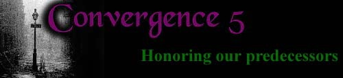

 |
|
| C5:
|
Convergence
I Chicago: June 23-25, 1995 The first ever Convergence took place in the Windy City and was organized by Heather Spear and Gothpat. Many of the attendees stayed at the rock-n-roll Days Inn, when they were not attending the musical events. Bands from Convergence I were: Arcanta, The Machine In The Garden, Seraphim Gothique, Sunshine Blind, The Wake, Garden of Dreams, Trance To The Sun, Lestat, Mephisto Walz, and Lycia. As you may have guessed, bands were a big part of the first Convergence! The general feeling amongst Convergence-goers was that this was a good thing and should be done more often. Although Heather Spear swore she would never do it again, we got her to come around for another one.
Convergence
II With Convergence II, the tradition of voting in each year's host city was begun. Organized by Cusraque, CII included performances by Johnny Indovina (of Human Drama), Switchblade Symphony, Sunshine Blind, Valor's Christian Death, You Shriek, and One Of Us. CII also expanded the scope of Convergence by organizing other, non-music activities, such as a cemetery tour, buffet dinner at The Middle East, and a fashion show.
Convergence
III And now on to the west coast: Convergence III was organized by Laudanum, with performances by Battery, This Ascension, John Koviak's SubVersion, Kill Sister Kill, Darkling Thrush, Seraphim Gothique, The Razor Skyline and Wench. An entertaining cemetery tour was also included in CIII, as well as dancing at the Trocadero, a Mad Hatter's tea party, and a signing by Jhonen Vasquez (creator of Johnny The Homicidal Manic)
Convergence
IV After having exhausted three sides of the United States, Convergence-goers moved on to Canada for the fourth Convergence. Organizers this time around were Sheryl Kirby, Greg Clow, Siobhan Niloughlin, and Charlotte Ashley. Highlights of CIV included musical performances by Masochistic Religion, My Scarlet Life, the Changelings, Rhea's Obsession, Faith and the Muse, and An April March. Dinner at Movenpick Marche, a tour of Casa Loma, a 24 hour-long scavenger hunt, a visit to the Canadian National Exhibition, and a fancy-dress tea rounded out a Convergence weekend packed full of wonderful things to do, see, and hear.
Convergence
V
Convergence
VI Visit their website for info.
**Most humble thanks for the work of Stained Productions and the C4 Collective, from which much of the information in this history was culled.**
|